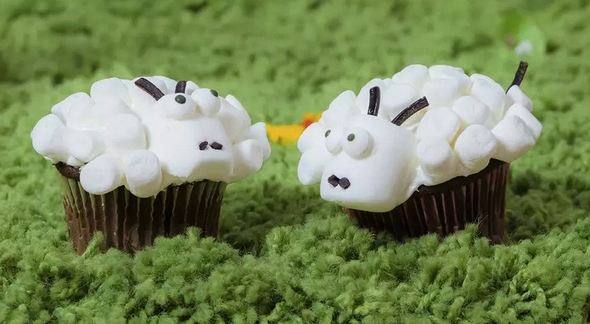

I made these little lamb cupcakes for Easter and they were the perfect placement decorations for my family. Everybody loved them and they are quick and easy to decorate.
Recipe by | Updated on August 22, 2022
Ingredients
Lambs:
Directions
Frost each cupcake with an even layer of frosting using a spatula or a palette knife
Use a skewer to poke 2 holes in the top end of each marshmallow half for the ears. Poke 2 holes at the bottom of the front side for each of the nostrils.
Cut the black licorice laces into short lengths: 24 small pieces for the nostrils and thirty-six 1/3-inch lengths for the ears and tails. Stick the shorter licorice pieces into the marshmallows where you've poked holes for the nostrils. Stick 24 of the longer pieces into the marshmallows where you've poked holes for the ears. Attach 1 marshmallow head to each cupcake.
Cover cupcakes with mini marshmallows, sticking them to the frosting flat-side down. Leave space on the opposite side of the head to attach the tail. Poke a hole there using a skewer, then stick in the remaining licorice pieces for the tails.
Spread the backs of two candy eyeballs with a bir of frosting. Attach to the marshmallow, positioning above the nose. Repeat with remaining eyeballs.
Nutrition Facts - per serving
Reviews